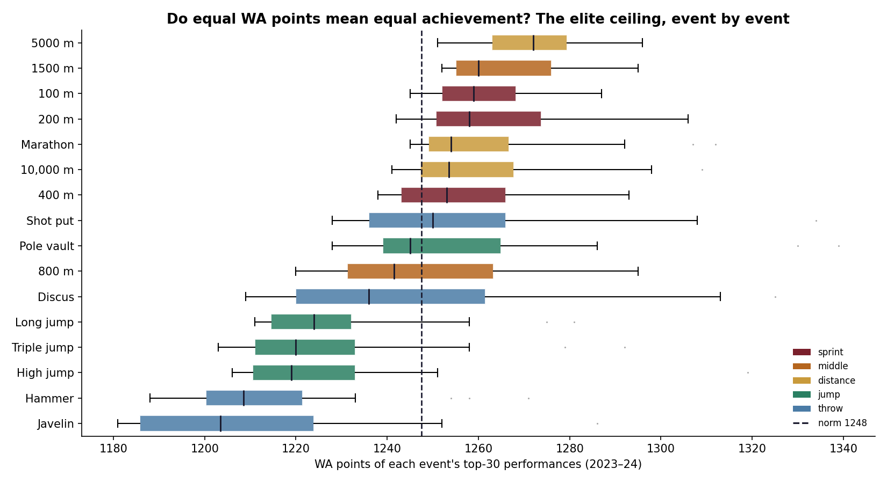
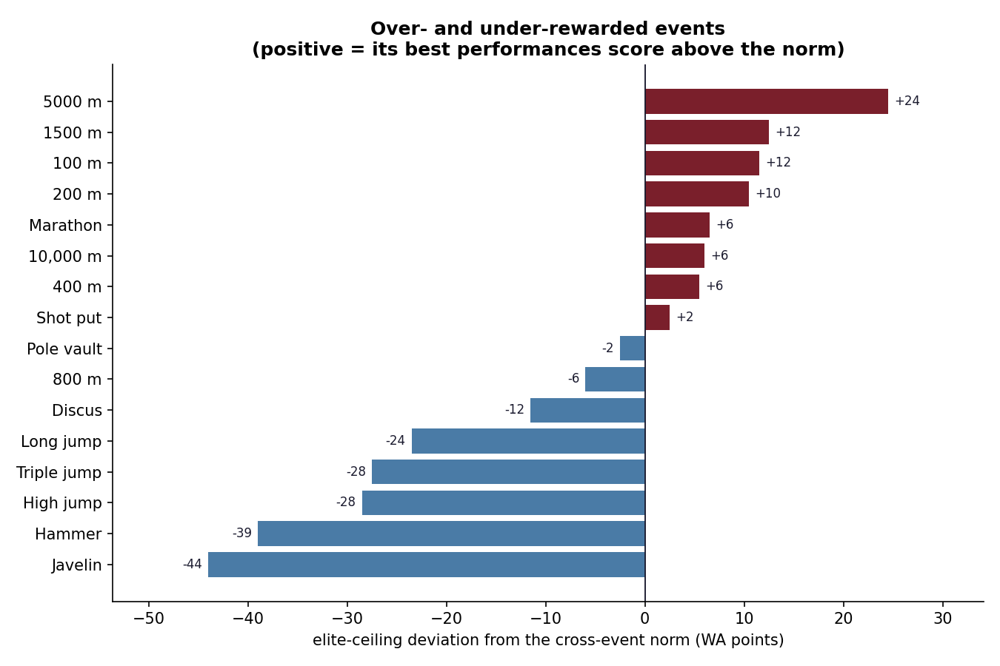

Track & field's universal currency, tested against the world's best.
All of track & field runs on one quiet assumption: that 1200 points in the shot
put is exactly as impressive as 1200 points in the 100 m. The combined events, athlete-of-the-year
votes, every GOAT argument — all of it leans on the scoring tables treating events equally. So I put
that to the test against 6,400 elite performances, each carrying the WA points the
sport itself awarded it.
68 ptsgap between the best- and worst-scoring event's elite ceiling
p ≈ 10⁻⁴²that the events score equally — decisively rejected
16 events6,400 top performances, 134 nations (2023–24)
The elite ceiling isn't level
Rank each event by the median WA score of its top-30 performances and a clear gradient appears:
the 5000 m and 1500 m sit highest, a full 68 points above the javelin
and hammer at the bottom. Running events score higher at the top than the throws and jumps.
Among today's elite, 1250 points is an unremarkable distance-running season — and a near-national-record
javelin throw.

Each event's top-30 WA scores. Distance running clusters high; throws and jumps sit below the norm.

How far each event's elite ceiling sits above (wine) or below (blue) the cross-event norm.
What it proves — and what it doesn't
An event's elite scores depend on two things: how the table converts
marks to points, and how deep its current field is. Distance running is in a golden, crowded
era; the hammer and javelin are thinner — and a thin event shows a lower ceiling even under a perfectly
fair table. So the honest claim isn't "the tables are miscoded." It's the sharper one:
equal points don't currently buy equal standing across events — part calibration, part
talent pool. The universal number is, in practice, worth more in some events than others.